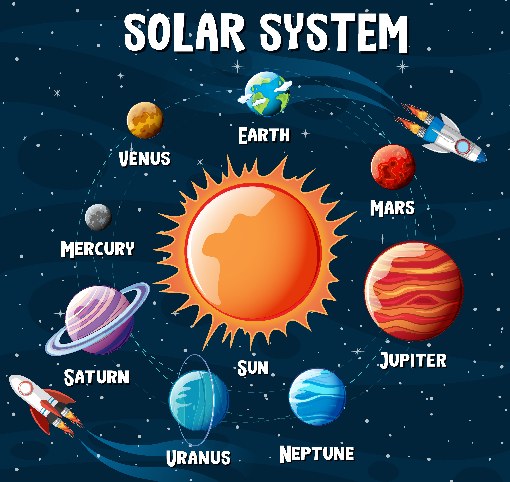

Tableau is utilized to conduct an analytical assessment of Airbnb projects, focusing on specific geographical locations. By leveraging statistical insights, property owners can strategically determine optimal rental pricing, timing for rentals, potential adjustments to costs, and the management of available properties. The data reveals not only the revenue generated monthly but also empowers Airbnb hosts to forecast demand and enhance room availability. The variation in prices across different zip codes assists in deciding which locations to prioritize for rentals. Through this data-driven analysis, property owners gain a comprehensive understanding of seasonal trends, bed availability, and pricing trends per zip code, allowing them to formulate well-informed plans for upcoming years
analysis

Creating a groundbreaking collection and replication of a registry containing exoplanets located within the circumstellar habitable zone, also known as the Goldilocks Zone, is undertaken. The data utilized for this endeavor is drawn from estimations provided by the Habitable Exoplanets Catalog (HEC), which is meticulously upheld by the Planetary Habitability Laboratory situated at the University of Puerto Rico in Arecibo. Furthermore, data from the NASA Exoplanet Archive and Wikipedia is incorporated. These exoplanets are systematically categorized and compiled based on criteria such as their distance from Earth, the nature of the host star, density (measured in g/cm^3), flux (relative to Earth's), planetary equilibrium temperature (expressed in Kelvin), and radius in comparison to Earth (Earth Similarity Index or ESI).

This project uncovers the potential correlations among factors that contribute to a bike purchase, such as marketing strategy, income, age group, and gender. The analysis also goes further to identify the most effective marketing strategies for various segments of buyers. The dataset is cleaned, loaded, and analyzed using Microsoft Excel. A report is generated in a dashboard format, designed for easy viewing by stakeholders

The project revolves around a distinct geographical region where a credit card issuing company aims to comprehend the prevailing user behavior and statistics. The ETL process (Extract, Transform, Load) and data modeling are facilitated through the utilization of the POWER BI tool. This tool is also employed for visualizing the data within a dashboard. The dashboard provides an inclusive overview of user demographics and default statistics, including counts categorized by gender, age, marital status, and educational background.
View Project

Project Title: Analyzing Global Population Distribution by Continent using Power BI
The World Population Dashboard project has been developed using POWER BI. The dashboard incorporates a world map to enhance user experience and facilitate interactive exploration in an aesthetically pleasing manner. Additionally, pie charts have been integrated to aid in comprehending both the complete picture and individual components of the data. When specific continents are selected, the values within the table and pie charts seamlessly adjust to reflect the chosen continent, ensuring a cohesive visual representation.
View Project

This project is executed using Tableau to visualize the dimensions of celestial bodies in the solar system. It encompasses the sizes of rocky planets within the inner solar system and gas giants located in the outer solar system, including those within the Kuiper belt. The visualization illustrates the proportional dimensions of each planet in relation to others. A bubble chart is employed for this purpose, offering a spherical representation of the planets. The unit of measurement is kilometers in radius, and the data is sourced from NASA and the Lunar and Planetary Institute.
.
<